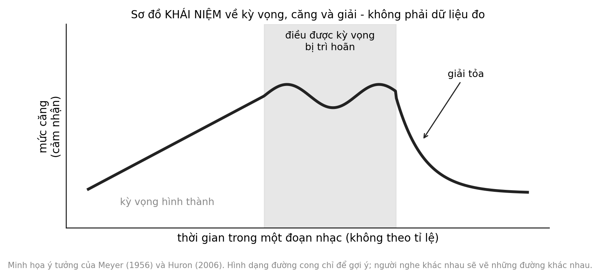

4 Hòa âm của cảm xúc
Hai học sinh cùng nghe một bản nhạc không lời trên một chiếc loa nhỏ. Một em tựa đầu lên bàn, mắt nhắm, miệng khẽ cười. Em còn lại cau mày và đeo tai nghe của riêng mình. Cùng một âm thanh, cùng một căn phòng, nhưng hai phản ứng khác nhau. Điều gì trong âm nhạc, và điều gì trong người nghe, tạo nên sự khác nhau ấy?
Câu hỏi trung tâm
Âm nhạc tạo bối cảnh cảm xúc bằng những cơ chế nào, và vai trò hợp lý của giáo viên hay phụ huynh là gì khi nó khác với trị liệu âm nhạc? Chương này đi từ cơ chế (kỳ vọng, phần thưởng, điều hòa tâm trạng) sang những chỗ cần thận trọng nhất: nhạc buồn khi một người đang trầm cảm, và ranh giới giữa dùng âm nhạc trong giáo dục với trị liệu do chuyên gia thực hiện.
Hai điều cần phân biệt
Có hai câu hỏi dễ bị gộp làm một. Câu thứ nhất là bản nhạc “biểu đạt” cảm xúc gì, tức người nghe nhận ra nó vui hay buồn. Câu thứ hai là người nghe thật sự cảm thấy gì. Hai điều này thường trùng nhau, nhưng không phải lúc nào cũng vậy: một người có thể nhận ra một bài hát buồn mà không thấy buồn, hoặc thấy xúc động vì một lý do riêng chẳng liên quan đến bản nhạc. Cả chương cần được đọc với sự phân biệt ấy trong đầu.
Chương đi theo sáu bước: kỳ vọng và căng giải, phần thưởng và dopamine, điều hòa tâm trạng ở thanh thiếu niên, cảm xúc qua các nền văn hóa, nhạc buồn và trầm cảm, và cuối cùng là ranh giới giữa giáo dục với trị liệu. Hoạt động ở cuối chương dùng một đồ thị đơn giản để các em quan sát phản ứng của chính mình.
1. Kỳ vọng, căng và giải
Một cách giải thích có ảnh hưởng lớn về cảm xúc trong âm nhạc bắt đầu từ kỳ vọng. Meyer cho rằng cảm xúc nảy sinh khi một xu hướng, một điều ta chờ đợi âm nhạc sẽ làm tiếp, bị trì hoãn hoặc bị ngăn lại Giả thuyết (Meyer, 1956). Huron phát triển ý tưởng này thành một mô hình mô tả các giai đoạn của một khoảnh khắc nghe: tưởng tượng điều sắp tới, căng thẳng chuẩn bị, dự đoán, phản ứng nhanh khi sự kiện đến, và đánh giá sau cùng; theo mô hình ấy, cảm giác dễ chịu hay bất ngờ phụ thuộc vào việc dự đoán đúng hay sai và việc đánh giá diễn ra thế nào Giả thuyết (Huron, 2006). Cả hai là khung lý thuyết, có những dự đoán kiểm chứng được và có nhiều kết quả phù hợp, nhưng không phải một định luật.
Cũng cần lưu ý rằng căng và giải là một trục khác với vui và buồn. Một đoạn nhạc buồn có thể rất căng hoặc rất thư thái, và một đoạn nhạc vui có thể kéo dài sự chờ đợi trước khi giải tỏa. Khi nói chuyện với học sinh, tách hai trục này giúp các em có thêm từ ngữ chính xác hơn so với việc chỉ nói “vui” hay “buồn”.
Một điểm đáng nhấn mạnh là kỳ vọng được học qua kinh nghiệm. Theo Huron, người nghe dần nắm được những quy luật thống kê của thể loại âm nhạc họ nghe nhiều, như chuỗi nốt nào thường theo sau chuỗi nốt nào, và dựa vào đó để dự đoán Giả thuyết (Huron, 2006). Nếu đúng, hai người lớn lên với những truyền thống âm nhạc khác nhau sẽ có những kỳ vọng khác nhau, và một bản nhạc “bất ngờ” với người này có thể hoàn toàn bình thường với người kia. Điều đó phù hợp với cách giải thích nhiều cơ chế ở đoạn sau, và với lý do vì sao ta không nên coi một phản ứng cảm xúc là phản ứng chung của tất cả mọi người.
Một khung rộng hơn nhìn âm nhạc gợi cảm xúc qua nhiều cơ chế khác nhau cùng lúc. Juslin và Västfjäll đề xuất một bộ cơ chế gồm phản xạ thân não, điều kiện hóa đánh giá (một âm thanh trở nên dễ chịu vì từng đi cùng điều dễ chịu), lây lan cảm xúc, hình dung, ký ức giai thoại và kỳ vọng âm nhạc Giả thuyết (Juslin & Västfjäll, 2008). Phiên bản mở rộng về sau bổ sung thêm đồng bộ nhịp và phán đoán thẩm mỹ, và gom các cơ chế ấy vào một lý thuyết thống nhất về cảm xúc âm nhạc Giả thuyết (Juslin, 2013). Một tổng quan thần kinh học cũng cho thấy nhiều vùng não tham gia vào những cảm xúc do nhạc gợi lên, từ vùng thính giác đến các cấu trúc xử lý phần thưởng và cảm xúc Sơ bộ (Koelsch, 2014).
Điểm quan trọng với người dạy là các cơ chế khác nhau cho ra những phản ứng rất khác nhau với cùng một bản nhạc. Một người có thể xúc động vì kỳ vọng được đáp ứng bất ngờ, người khác vì bản nhạc gợi nhớ một buổi tối cụ thể ở nhà, người thứ ba vì nhịp làm cơ thể họ phấn chấn. Vì vậy, từ các khung này chúng ta có thể giữ lại một mệnh đề thận trọng: âm nhạc tạo bối cảnh cảm xúc; nó không quyết định cảm xúc của ta. Mệnh đề giải mã thành ba điều. Cấu trúc âm nhạc, như nhịp, giai điệu và những chỗ ngừng, cung cấp tín hiệu mà người nghe có thể diễn giải theo kỳ vọng và ký ức của mình. Phản ứng thực tế phụ thuộc vào người nghe, hoàn cảnh và văn hóa. Và vì phản ứng khác nhau giữa người này với người kia, ta không thể chọn một bản nhạc để bảo đảm một cảm xúc định trước ở người khác.
Có thể tự kiểm chứng điều này một cách đơn giản. Hãy cho vài người cùng nghe một đoạn nhạc ngắn có chỗ dừng bất ngờ, rồi hỏi mỗi người họ nghĩ gì ở chỗ đó. Bạn sẽ nghe những câu trả lời như “hồi hộp”, “hơi khó chịu”, “nhớ một bài hát cũ”, hoặc “không để ý”. Sự khác nhau ấy không phải lỗi của ai, và nó chính là điều mệnh đề muốn nói.
2. Dopamine và đỉnh cảm xúc
Một số người mô tả những lúc nghe nhạc mà họ nổi da gà hoặc rùng mình khoái cảm. Các thí nghiệm chụp não cho thấy trong những lúc như vậy, các vùng não gắn với phần thưởng và cảm xúc, như thể vân bụng và hệ viền, thay đổi hoạt động Sơ bộ (Blood & Zatorre, 2001). Một nghiên cứu sau đó dùng kỹ thuật cho phép đo sự giải phóng dopamine ở người nghe nhạc cho thấy dopamine được giải phóng ở những phần khác nhau của thể vân, một phần trong lúc chờ đợi một đoạn nhạc cao trào và một phần vào đúng lúc đỉnh cảm xúc xảy ra Sơ bộ (Salimpoor và c.s., 2011).
Điều đáng chú ý ở kết quả này là sự tách biệt giữa chờ đợi và trải nghiệm. Nó phù hợp với ý tưởng ở mục 1 rằng một phần cảm xúc âm nhạc đến từ việc dự đoán điều sắp xảy ra chứ không chỉ từ chính âm thanh khi nó vang lên. Tuy nhiên, thí nghiệm dùng một nhóm nhỏ người lớn, và các bản nhạc do chính người tham gia chọn vì chúng gây xúc động mạnh. Một nghiên cứu khác cho thấy sự tương tác giữa nhân đệm và vỏ thính giác dự đoán mức người nghe sẵn sàng bỏ tiền ra mua một bản nhạc mới Sơ bộ (Salimpoor và c.s., 2013).
Bằng chứng nhân quả đến từ một thử nghiệm dùng thuốc: khi dopamine được tăng cường, người tham gia báo cáo thích thú và sẵn sàng chi tiền cho nhạc nhiều hơn; khi bị giảm, họ báo cáo ngược lại Sơ bộ (Ferreri và c.s., 2019). Điều đó gợi ý rằng dopamine không chỉ đi cùng khoái cảm âm nhạc mà còn góp phần tạo ra nó.
Cần nhớ rằng các kỹ thuật đo như chụp cắt lớp phát xạ dùng chất đánh dấu phóng xạ liều nhỏ, và vì lý do đạo đức, hầu như không được dùng với trẻ em khỏe mạnh. Vì vậy, gần như toàn bộ hiểu biết về cơ chế dopamine trong âm nhạc đến từ người lớn.
Nhưng có bốn giới hạn. Các thí nghiệm này dùng nhóm nhỏ, hầu hết ở những người chọn bản nhạc họ thấy xúc động mạnh, nên không phản ánh một lớp học với nhiều sở thích khác nhau. Dopamine ở đây gắn với phần thưởng và động lực, không đồng nghĩa với “hạnh phúc”. Các cơ chế này mô tả khoảnh khắc nghe, không cho biết âm nhạc cải thiện học tập hay sức khỏe tinh thần. Và những phát hiện này đến từ người lớn, không phải từ trẻ em hay thanh thiếu niên.
Vì vậy cách nói “nghe nhạc giải phóng dopamine nên giúp học tốt hơn” là một bước nhảy mà bằng chứng không hỗ trợ. Điều có cơ sở hơn là nhạc có thể trở thành một nguồn thích thú riêng, với phần thưởng nội tại, mà người dạy có thể tôn trọng và dùng như một cầu nối với học sinh.
Một hệ quả khác cũng có cơ sở là chuyện lựa chọn. Trong các nghiên cứu trên, âm nhạc được chọn bởi chính người nghe là loại tạo ra phản ứng mạnh nhất. Với giáo viên, điều này gợi ý rằng khi học sinh được tham gia chọn bài, sự hứng thú có nhiều khả năng đến từ chính các em hơn là từ bản nhạc do người lớn áp đặt. Đây là một suy luận sư phạm, chưa phải kết quả đã được kiểm chứng trong lớp học Thực tiễn sư phạm.
3. Điều hòa tâm trạng ở thanh thiếu niên
Ở tuổi thanh thiếu niên, âm nhạc thường được dùng như một công cụ để xử lý cảm xúc. Một nghiên cứu phỏng vấn thanh thiếu niên mô tả bảy cách các em dùng nhạc để điều hòa tâm trạng: giải trí, làm tươi lại, tìm cảm giác mạnh, đánh lạc hướng, xả cảm xúc, suy nghĩ sâu và tìm an ủi Sơ bộ (Saarikallio & Erkkilä, 2007). Vì là nghiên cứu định tính với số người ít, nó cho một bản đồ hợp lý về các cách dùng, không cho biết cách nào phổ biến hay có lợi hơn.
Bảy cách ấy không cùng một tính chất. Giải trí, làm tươi lại và tìm cảm giác mạnh hướng tới việc tạo cảm xúc dễ chịu. Xả cảm xúc, suy nghĩ sâu và tìm an ủi hướng tới việc xử lý cảm xúc khó chịu. Nghiên cứu mô tả các cách này, nhưng không cho biết cách nào hợp lý hơn, và cũng không phán xét ai: cùng một bài hát, một em dùng để xả, em khác dùng để suy nghĩ, và các em có thể chuyển giữa các cách trong cùng một buổi tối.
Một khảo sát rộng hơn về lý do người ta nghe nhạc, dựa trên nhiều nghiên cứu, gom các chức năng của việc nghe nhạc thành ba nhóm lớn: hiểu rõ bản thân, gắn kết xã hội, và điều chỉnh mức kích thích và tâm trạng Sơ bộ (Schäfer và c.s., 2013). Một nghiên cứu khảo sát thanh thiếu niên xem xét mối liên hệ giữa việc nghe nhạc để đối phó, kết nối với bạn bè và các triệu chứng trầm cảm, và cho thấy mối liên hệ này không đồng nhất giữa các cách dùng Sơ bộ (Miranda & Claes, 2009). Vì là khảo sát cắt ngang, không thể suy ra cách nghe nào gây ra hay làm giảm các triệu chứng.
Với gia đình, một thói quen khá lành mạnh là cùng nhau nói về nhạc mà không cần đánh giá nó. Hỏi “bài này đang làm gì cho con” thường mở ra nhiều hơn hỏi “sao con nghe bài buồn thế”. Về an toàn, nên giữ âm lượng ở mức vừa phải khi dùng tai nghe; Chương 8 sẽ nói kỹ hơn về nghe an toàn.
Hệ quả thực tiễn là tôn trọng việc các em tự dùng âm nhạc. Một học sinh đeo tai nghe sau một ngày khó khăn có thể đang làm điều khá lành mạnh. Người lớn không cần can thiệp vào từng bài hát, nhưng có thể quan tâm khi âm nhạc dường như thay thế mọi hình thức tiếp xúc khác, khi tâm trạng kéo dài ủ dột, hoặc khi em tự rút lui khỏi bạn bè và những điều từng thích. Những dấu hiệu ấy thuộc về mục 5 dưới đây.
Hiện chưa có dữ liệu đủ lớn ở Việt Nam về cách thanh thiếu niên Việt dùng âm nhạc để điều hòa tâm trạng; các nghiên cứu được trích ở đây đến từ những bối cảnh khác, và việc áp dụng nguyên văn là một giả định cần kiểm tra. Đây là hướng nghiên cứu ưu tiên.
4. Cảm xúc qua các nền văn hóa và khác biệt giữa người nghe
Nếu cảm xúc trong nhạc dựa vào các tín hiệu như nhịp, độ cao và âm sắc, ta có thể hỏi người ở nền văn hóa khác có nhận ra chúng không. Trong một nghiên cứu, người dân một cộng đồng ở Cameroon chưa tiếp xúc nhiều với nhạc phương Tây vẫn nhận ra ba cảm xúc cơ bản là vui, buồn và sợ trong các đoạn nhạc phương Tây ở mức cao hơn ngẫu nhiên Sơ bộ (Fritz và c.s., 2009). Một nghiên cứu khác cho thấy người nghe phương Tây có thể nhận ra niềm vui, nỗi buồn và sự giận dữ trong các đoạn nhạc Hindustani mà họ không quen, dựa trên những đặc điểm như tốc độ và độ phức tạp của giai điệu Sơ bộ (Balkwill & Thompson, 1999).
Cần đọc các kết quả này đúng phạm vi của chúng. Đó là nhận ra cảm xúc được biểu đạt, không phải cảm thấy cảm xúc ấy. Đó là một số ít cảm xúc cơ bản, không phải những sắc thái phức tạp như hoài niệm hay xấu hổ. Mẫu mỗi nghiên cứu nhỏ và thuộc một số cộng đồng nhất định, và ở những tình huống như đám tang hay lễ hội, ý nghĩa của một bản nhạc phụ thuộc rất nhiều vào quy ước văn hóa. Kết quả phù hợp với việc cả tín hiệu phổ biến lẫn quy ước văn hóa cùng tham gia vào cảm xúc âm nhạc, và với mệnh đề ở mục 1: âm nhạc tạo bối cảnh, không quyết định phản ứng.
Chương này không có nguồn nào đo mức độ khác biệt giữa các cá nhân trong cùng một nền văn hóa, nhưng quan sát hằng ngày cho thấy nó rất lớn: tâm trạng của người nghe lúc đó, nơi họ nghe, người đi cùng và điều họ đang nghĩ đều có thể làm đổi phản ứng với cùng một bản nhạc. Vì vậy một danh sách các bản nhạc “vui” hay “buồn” chỉ là điểm xuất phát để quan sát, không phải một đơn thuốc.
Chúng ta cũng chưa biết những kết quả này đúng đến đâu với thính giả Việt Nam, vì không có nghiên cứu nào trong những nghiên cứu vừa nêu mà chúng ta biết là đã so sánh cách người Việt nhận ra và cảm nhận cảm xúc trong các thể loại nhạc khác nhau. Hiện chưa có dữ liệu đủ lớn ở Việt Nam về điều này; đây là hướng nghiên cứu ưu tiên.
5. Nhạc buồn, trầm cảm và nguy cơ nghiền ngẫm
Nghe nhạc buồn là một trải nghiệm phổ biến, và người nghe thường mô tả nó là dễ chịu chứ không chỉ buồn. Một tổng quan hệ thống về niềm vui của nhạc buồn ghi nhận rằng người nghe thường mô tả những cảm xúc pha trộn, trong đó buồn và dễ chịu có thể xuất hiện cùng lúc, và những lý do khiến họ thích nhạc buồn khác nhau giữa người này với người kia Sơ bộ (Sachs và c.s., 2015). Một thí nghiệm cho thấy nhạc buồn và ký ức buồn có thể làm tăng cảm xúc buồn khi đo bằng những thước đo gián tiếp, tức là nhạc buồn không phải lúc nào cũng vô hại Sơ bộ (Vuoskoski & Eerola, 2012).
Với những người có xu hướng trầm cảm, bằng chứng đáng lưu ý hơn. Một nghiên cứu cho thấy những người có xu hướng trầm cảm có khả năng dùng nhạc buồn theo cách nghiền ngẫm, tức nghĩ đi nghĩ lại về điều đau buồn, cao hơn những người khác, và cách dùng này có thể duy trì tâm trạng thấp thay vì làm nó nhẹ đi Sơ bộ (Garrido & Schubert, 2015). Một nghiên cứu định tính về các tương tác xã hội quanh âm nhạc ở những người có xu hướng trầm cảm mô tả cả những cách dùng lành mạnh lẫn nguy cơ nghiền ngẫm cùng nhau trong nhóm Sơ bộ (Garrido và c.s., 2017). Nhận xét thận trọng là: cùng một việc nghe nhạc buồn có thể là an ủi với người này và là vòng lặp với người khác, và người ngoài khó phân biệt từ bên ngoài.
Một vài tình huống giúp hình dung. Một em nghe nhạc buồn sau một ngày thi không tốt, rồi vẫn nói chuyện bình thường và đi chơi với bạn: điều này nhiều khả năng bình thường, và đáng để người lớn tôn trọng. Một em nghe cùng một vài bài buồn suốt nhiều tuần, ít nói hơn, ngại gặp bạn và bỏ những điều từng thích: người lớn nên hỏi thăm trực tiếp, nhẹ nhàng, và theo dõi. Một em nói rằng mình vô dụng hoặc không muốn sống: đây là lúc cần tìm sự hỗ trợ chuyên môn ngay, không phải lúc đổi playlist. Hai nghiên cứu trên chỉ cho thấy mối liên hệ, không cho thấy nhạc buồn gây ra trầm cảm.
Điều này cũng ngăn ta khỏi hai phản ứng đối nghịch đều sai. Một là cấm trẻ nghe nhạc buồn, vì không có bằng chứng rằng nhạc buồn gây ra trầm cảm, và việc cấm có thể làm các em giấu việc mình đang dùng nhạc. Hai là coi việc nghe nhạc buồn là chiến lược chăm sóc bản thân, vì với một số người nó có thể là vòng lặp.
Cũng đừng quên người lớn. Giáo viên và phụ huynh có những ngày nặng nề của riêng mình, và việc chăm sóc người khác lâu dài có thể làm mình kiệt sức. Nếu bạn nhận ra mình đang dùng âm nhạc để chịu đựng thay vì để nghỉ ngơi trong thời gian dài, đó cũng là dấu hiệu nên nói chuyện với ai đó.
Phần quan trọng nhất của mục này là ranh giới. Nghe nhạc để xử lý tâm trạng hằng ngày là một chuyện. Một người đang bị trầm cảm là một chuyện khác. Nếu một học sinh hay người thân buồn kéo dài nhiều tuần, mất hứng thú với những điều từng thích, ngủ hoặc ăn thay đổi rõ rệt, rút lui khỏi mọi người, nói rằng mình vô dụng hoặc không muốn sống, thì âm nhạc không phải là biện pháp phù hợp, và người ấy cần được gặp chuyên gia sức khỏe tâm thần hoặc bác sĩ. Ở trường, hãy báo cho người phụ trách tâm lý hoặc ban giám hiệu và liên hệ với gia đình. Nếu có nguy cơ tự làm hại mình, hãy tìm hỗ trợ khẩn cấp ngay. Chúng ta không liệt kê số điện thoại ở đây vì chúng có thể thay đổi; hãy kiểm tra nguồn chính thức tại địa phương.
6. Giáo dục không phải trị liệu
Trị liệu âm nhạc (music therapy) có một định nghĩa chuyên môn: một quá trình có hệ thống, do nhà trị liệu được đào tạo thực hiện, trong đó trải nghiệm âm nhạc và mối quan hệ trị liệu được dùng để giúp thân chủ đạt những mục tiêu về sức khỏe Giả thuyết (Bruscia, 2014). Đó là một nghề với đào tạo, đánh giá và đạo đức riêng. Việc một giáo viên cho cả lớp nghe nhạc hay một phụ huynh hát cho con nghe, dù có thể rất giá trị, không phải là trị liệu.
Để đọc các con số bên dưới, cần biết hai điều. Thứ nhất, SMD là hiệu số chuẩn hóa tính theo độ lệch chuẩn, và dấu âm ở các thang trầm cảm hay triệu chứng nghĩa là triệu chứng giảm. Thứ hai, độ tin cậy của bằng chứng theo hệ thống GRADE phản ánh việc ta tin đến đâu vào ước lượng; ở trị liệu âm nhạc, nó thường bị kéo xuống vì người tham gia và người trị liệu không thể không biết nhóm của mình, và vì nhiều nghiên cứu nhỏ.
Bằng chứng về trị liệu âm nhạc, ở nơi được thực hiện đúng cách, là có thật nhưng có điều kiện. Với trầm cảm, tổng quan Cochrane gộp chín nghiên cứu với 421 người tham gia ghi nhận rằng, khi thêm trị liệu âm nhạc vào chăm sóc thông thường, triệu chứng trầm cảm do bác sĩ đánh giá giảm (SMD = −0,98; KTC 95% [−1,69; −0,27]; n = 219; độ tin cậy của bằng chứng trung bình), và triệu chứng tự báo cáo cũng giảm (SMD = −0,85; KTC 95% [−1,37; −0,34]; n = 142), trong ngắn hạn, khoảng ba tháng. Chất lượng cuộc sống không khác biệt (SMD = 0,32; KTC 95% [−0,17; 0,80]; n = 67; độ tin cậy thấp) Trung bình (Aalbers và c.s., 2017). Cần nhớ rằng đây là trị liệu do chuyên gia thực hiện trên người được chẩn đoán trầm cảm, và nhiều nghiên cứu nhỏ.
Với trẻ tự kỷ, bản cập nhật năm 2022 của tổng quan Cochrane gộp 26 nghiên cứu ghi nhận rằng, ngay sau can thiệp, trị liệu âm nhạc so với trị liệu giả hay chăm sóc thông thường nhiều khả năng cải thiện đánh giá chung (RR = 1,22; KTC 95% [1,06; 1,40]; 8 nghiên cứu, 583 người; độ tin cậy trung bình), làm tăng nhẹ chất lượng cuộc sống (SMD = 0,28; KTC 95% [0,06; 0,49]) và giảm mức độ nặng của triệu chứng tự kỷ nói chung (SMD = −0,83; KTC 95% [−1,41; −0,24]; 9 nghiên cứu, 575 người). Với tương tác xã hội (SMD = 0,26; KTC 95% [−0,05; 0,57]; độ tin cậy thấp) và giao tiếp không lời hay có lời, chưa thấy khác biệt rõ Trung bình (Geretsegger và c.s., 2022). Các kết quả này chỉ đo ngay sau can thiệp.
Từ hai tổng quan này, chúng ta có thể nói ba điều và không nói ba điều khác. Chúng ta có thể nói trị liệu âm nhạc do chuyên gia thực hiện có bằng chứng về lợi ích ở một số kết quả, trong những quần thể và điều kiện cụ thể. Chúng ta không thể suy ra rằng nghe nhạc ở nhà giúp giảm trầm cảm, rằng giáo viên không chuyên có thể làm điều tương tự, hay rằng âm nhạc giúp mọi trẻ tự kỷ. Và chúng ta không thể nói lợi ích có kéo dài hay không, vì các kết quả đo ngay sau can thiệp.
Vai trò hợp lý của giáo viên và phụ huynh là khác và khiêm tốn hơn. Tạo một bối cảnh âm nhạc an toàn, nơi các em có thể nghe, gọi tên và nói về cảm xúc của mình mà không bị buộc phải bộc lộ. Dạy từ vựng để nói về căng và giải, vui và buồn. Quan sát phản ứng của từng em. Và biết lúc nào cần giới thiệu một em đến người có chuyên môn.
Trong thực tế, điều này có thể chỉ là những câu hỏi đơn giản sau khi nghe: bản nhạc làm bạn nghĩ đến điều gì, bạn nghe thấy điều đó ở chỗ nào, bạn có muốn kể thêm không. Người dạy không đóng vai nhà tâm lý và không cần giải thích cảm xúc thay học sinh. Chỉ cần giữ không gian để các em tự nói và để mỗi người có quyền không nói.
Cơ chế và bằng chứng chính
| Phát biểu | Mức | Nguồn chính | Điều kiện / giới hạn |
|---|---|---|---|
| Cảm xúc âm nhạc nảy sinh từ kỳ vọng được đáp ứng hoặc bị trì hoãn | Giả thuyết | (Huron, 2006; Juslin & Västfjäll, 2008; Meyer, 1956) | khung lý thuyết; nhiều cơ chế cùng tham gia |
| Khoái cảm đỉnh gắn với hoạt động dopamine và vùng phần thưởng | Sơ bộ | (Blood & Zatorre, 2001; Ferreri và c.s., 2019; Salimpoor và c.s., 2011) | nhóm nhỏ, người lớn; không suy ra cho học tập |
| Thanh thiếu niên dùng nhạc để điều hòa tâm trạng theo nhiều cách | Sơ bộ | (Saarikallio & Erkkilä, 2007; Schäfer và c.s., 2013) | định tính hoặc khảo sát cắt ngang; chưa có dữ liệu Việt Nam |
| Nhạc buồn có thể là vòng nghiền ngẫm ở người có xu hướng trầm cảm | Sơ bộ | (Garrido và c.s., 2017; Garrido & Schubert, 2015) | mối liên hệ, không phải nhân quả |
| Trị liệu âm nhạc do chuyên gia thực hiện giảm triệu chứng trầm cảm ngắn hạn | Trung bình | (Aalbers và c.s., 2017) | can thiệp lâm sàng; không áp dụng cho nghe nhạc ở nhà |
| Trị liệu âm nhạc cải thiện đánh giá chung ở trẻ tự kỷ | Trung bình | (Geretsegger và c.s., 2022) | đo ngay sau can thiệp; không rõ lợi ích kéo dài |

Ứng dụng trong lớp học và gia đình Việt Nam
Mục tiêu: Giúp học sinh nhận ra rằng cùng một đoạn nhạc có thể gợi những phản ứng khác nhau, và gọi tên căng và giải bằng một đồ thị đơn giản.
Chuẩn bị: Một đoạn nhạc không lời dài khoảng hai phút, phát bằng loa hoặc điện thoại; chọn đoạn trung tính hoặc nhẹ nhàng, tránh nhạc có lời, quá buồn hoặc quá dồn dập. Giấy và bút.
Thời gian: 12 phút.
Các bước:
- Mỗi em vẽ một trục: ngang là thời gian, dọc là “mức căng” từ thấp đến cao.
- Cả lớp nghe hai phút, không nói chuyện. Trong khi nghe, mỗi em vẽ một đường theo cảm nhận của mình.
- Đánh dấu một điểm mà em thấy bất ngờ hoặc nhẹ nhõm, nếu có.
- Từng cặp so sánh đồ thị: chỗ nào giống, chỗ nào khác, và vì sao có thể khác.
- Cả lớp thử gắn một vài chỗ trên đường vẽ với điều xảy ra trong nhạc, như nhịp nhanh hơn, giai điệu lên cao hay một lúc ngừng.
Quan sát gì: Những chỗ nhiều em vẽ giống nhau, những chỗ khác nhau, và cách các em giải thích. Không có đường nào đúng hay sai.
Biến thể: Mầm non: dùng màu hoặc một khuôn mặt để chỉ “căng” và “nhẹ” thay cho trục. Tiểu học: thêm một từ mô tả cho mỗi điểm đánh dấu. THCS: so sánh hai đoạn nhạc khác thể loại. Gia đình: cả nhà cùng nghe và vẽ rồi kể cho nhau.
Lưu ý: Không buộc ai chia sẻ cảm xúc cá nhân; chỉ cần chia sẻ đường vẽ. Cho phép dừng nghe nếu một em khó chịu. Nếu một học sinh có biểu hiện buồn kéo dài, mất hứng thú với mọi thứ, hoặc nói về việc làm hại bản thân, hãy báo cho người phụ trách tâm lý của trường và gia đình; hoạt động này không thay thế sự hỗ trợ chuyên môn.
Mức bằng chứng của hoạt động: Thực tiễn sư phạm. Các cơ chế ở mục 1 là khung giải thích, chưa có thử nghiệm đối chứng cho đúng quy trình này.
Giới hạn và lưu ý đạo đức
Phần lớn các cơ chế ở chương này là khung lý thuyết hoặc kết quả từ nhóm nhỏ ở người lớn, và các nghiên cứu về điều hòa tâm trạng chủ yếu là định tính hoặc khảo sát cắt ngang. Bằng chứng mạnh hơn, từ hai tổng quan Cochrane, nói về trị liệu âm nhạc do chuyên gia thực hiện trên những nhóm lâm sàng cụ thể, và không nói về việc dùng âm nhạc trong lớp học hay ở nhà. Các nghiên cứu này cũng chỉ đo kết quả ngay sau can thiệp.
Cần tính đến chi phí cơ hội và khả năng tiếp cận. Vài phút dành cho một hoạt động cảm xúc là vài phút không dành cho việc khác, và không phải gia đình hay trường nào cũng có người phụ trách tâm lý hay chuyên gia để giới thiệu. Có những học sinh nhạy cảm với âm thanh hoặc có ký ức đau buồn gắn với một bản nhạc; người dạy cần cho phép các em từ chối và dừng lại. Chúng ta cũng không nên coi sự im lặng hay dửng dưng của một em là thiếu tham gia, vì mỗi người xử lý cảm xúc khác nhau.
Ngược lại, cũng cần tránh bệnh lý hóa những phản ứng bình thường. Buồn sau một bản nhạc buồn, hay xúc động trước một bài hát quen, là phản ứng thường gặp chứ không phải dấu hiệu của rối loạn. Chương này không đưa ra công cụ nào để chẩn đoán, và người dạy không nên cố làm điều đó.
Cuối cùng, dữ liệu Việt Nam về cảm xúc âm nhạc, về cách thanh thiếu niên dùng nhạc để điều hòa tâm trạng, và về trị liệu âm nhạc ở các nhóm lâm sàng đều rất hạn chế. Chúng ta không nên suy ra rằng các kết quả ở nơi khác áp dụng nguyên văn, và không nên coi những điều ở chương này là lời khuyên y tế hay tâm lý.
Một hướng nghiên cứu khả thi và ít tốn kém là khảo sát nhỏ, ẩn danh và có sự đồng ý của nhà trường và phụ huynh, hỏi học sinh trung học về cách các em dùng nhạc khi căng thẳng, cùng với một cuộc phỏng vấn ngắn với giáo viên chủ nhiệm về những gì họ quan sát. Kết quả sẽ không cho biết nguyên nhân, nhưng đủ để tạo ra dữ liệu Việt Nam đầu tiên cho một câu hỏi hiện chưa có số liệu. Mọi nghiên cứu như vậy cần được xem xét về mặt đạo đức, và người nghiên cứu cần có kế hoạch rõ ràng để chuyển tuyến một em có dấu hiệu cần hỗ trợ.
Tóm tắt chương
- Âm nhạc tạo bối cảnh cảm xúc qua nhiều cơ chế như kỳ vọng và ký ức; nó không quyết định cảm xúc của người nghe Giả thuyết (Huron, 2006; Juslin & Västfjäll, 2008).
- Khoái cảm đỉnh gắn với phần thưởng và dopamine ở người lớn trong các thí nghiệm nhỏ; không suy ra cho học tập Sơ bộ (Ferreri và c.s., 2019; Salimpoor và c.s., 2011).
- Nghe nhạc buồn có thể là an ủi hoặc là vòng nghiền ngẫm ở người có xu hướng trầm cảm; người ngoài khó phân biệt Sơ bộ (Garrido & Schubert, 2015; Sachs và c.s., 2015).
- Trị liệu âm nhạc do chuyên gia thực hiện có bằng chứng ở mức trung bình cho một số kết quả ngắn hạn ở trầm cảm và tự kỷ; không suy ra cho giáo dục thường ngày Trung bình (Aalbers và c.s., 2017; Geretsegger và c.s., 2022).
- Vai trò hợp lý của người dạy là tạo bối cảnh an toàn, dạy cách gọi tên cảm xúc và biết lúc nào cần giới thiệu đến chuyên gia Thực tiễn sư phạm.
Câu hỏi phản tư
Bản nhạc nào gần đây khiến bạn hoặc một học sinh có phản ứng khác với dự đoán của bạn, và điều gì ở người nghe, hoàn cảnh hoặc ký ức có thể giải thích điều đó? Điều bạn quan sát được nằm ở đâu trên thang bằng chứng của chương này?